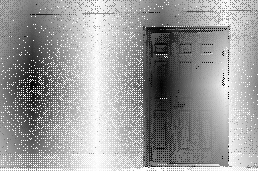

You've reached a future link!

Photo by Linford Miles on Unsplash
This page represents a destination for links that do not yet exist! When I think of projects or formulate material for this site, I often find myself thinking of multiple posts at the same time, intertwined with each other. As a result, I place this "future link" where I would link to a future post that hasn't been published yet, and then I can later find the spots where I need to update links using a simple grep command.